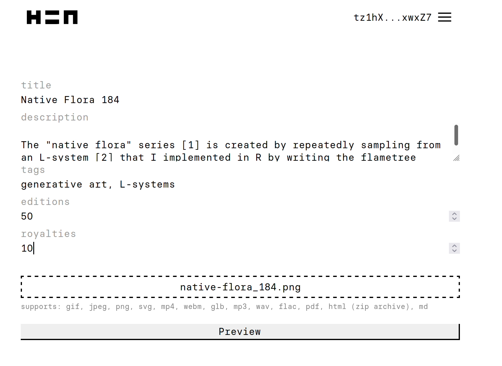

![]()
Cryptoart can be a touchy subject for generative artists, and it’s something a lot of us have messy feelings about. In my case it is no secret that I feel conflicted, and I completely understand why a lot of us are uncomfortable with it. I genuinely believe there are many perfectly good reasons why a generative artist would choose not to participate. On the other hand, I also recognise that there are some very sensible reasons why a generative artist would want (or need) to sell NFTs: artists have to pay rent, for example. So this post isn’t about passing judgment one way or the other. It’s intended to be a guide to help other artists get started in this area, particularly artists in the R community, if they should decide to try it out. That’s all.
This post is also not supposed to be an introduction to blockchains or cryptocurrencies. It doesn’t dive into the details on what these things are or even what an NFT is. I make art: I don’t care about any of these subjects. What I’m assuming is that you’re coming to this world from a similar position to me: you have a vague understanding of what blockchain is, what cryptocurrencies are about, and have a similarly vague notion that an NFT is kind of like a “digitally signed copy” of your art that you can sell to other people. That’s all you need.
Prologue: Barriers to entry
One thing I have noticed about the world of cryptoart is that there are many barriers to entry. Some barriers are obvious: if you want to sell art on Foundation, for example, you need to be invited. To be invited, you need to know someone who can and will invite you. As anyone who has ever been excluded from a fancy venue by virtue of their race, gender, sexual orientation, transgender status etc can attest, an invitation requirement is a non-trivial and frequently discriminatory barrier. “By invitation” systems create entry barriers by design: for good or ill, they are inherently exclusionary. But there are other ways in which cryptoart creates barriers to entry.
Environmental costs matter
Another kind of barrier comes from the nature of cryptoart. Blockchains were not designed to be energy efficient, and they can be extraordinarily wasteful (much more than you’d think). Environmental considerations also create barriers to entry, albeit indirect barriers. For example, the biggest cryptocurrencies like Bitcoin and Ethereum operate on a “proof of work” principle (often abbreviated to “PoW”) and as the name suggests, operations on those chains require a lot of computational work. A lot. They are staggeringly wasteful, and as a consequence the total energy consumption of these chains is so high that an NFT minted on one of these chains has a very high carbon footprint. Proof of work chains are an environmental disaster, and so (in my mind) they are socially irresponsible. Don’t use them if you can avoid it.
This poses a problem for artists, unfortunately. The biggest cryptoart markets are based on the Ethereum chain, and Ethereum is a proof of work chain. True, there are plans to change this and make Ethereum more ethical, but it hasn’t happened yet and I personally am unwilling to participate until that switch actually occurs. This is deeply unfortunate from artistic point of view, because it rules out OpenSea. It sucks because OpenSea is the largest marketplace and it’s very easy to get started there. For instance, I have an unused account that I set up in a few minutes before I realised the problem. But for me the end-user convenience wasn’t worth the environmental costs, so I abandoned this idea at the outset. On the plus side, OpenSea have announced that they are planning to support the Tezos blockchain (see below), and when that day comes I will probably make use of my OpenSea account: the thing I take moral issue with is not OpenSea, it is with Ethereum (or more precisely, with proof-of-work chains). Personally, I don’t want to touch the stuff.
So what are the alternatives?
There are alternatives
The main alternative to the “proof of work” blockchains are the “proof of stake” (PoS) blockchains. These don’t require anywhere near as much computation, and as a consequence are much more energy efficient. For that reason, NFTs on those chains are often called “clean NFTs”. There are a multiple proof of stake chains (Tezos, Solana, etc), but the one I’m most familiar with is Tezos. To give you a sense of just how extreme the difference is, this is a screenshot that popped up on one of the sites while I was doing my initial exploration:
Even if this claim is somewhat exaggerated for marketing purposes, the sheer scale of it is remarkable. A multiplicative factor of 1.5 million is… enormous. I could literally mint NFTs on Tezos for every single image that I have ever created for the rest of my life, and it would still be several orders of magnitude more energy efficient than minting one piece on Ethereum. To my way of thinking, that makes a massive difference to the moral calculus associated with minting NFTs. In fact, the difference between Tezos and Ethereum is so extreme that there is actually one art marketplace there – Bazaar – that is not just carbon neutral but is actually carbon negative. That’s only possible because Tezos is so much more efficient than Ethereum, and it becomes practical for the developers to impose a carbon tax on minting: the transaction costs are used to purchase sufficient carbon offsets to ensure the system as a whole remains carbon negative. Right now I wouldn’t recommend setting up on Bazaar because it’s so early in development that it’s hard to use, but I’m absolutely keeping an eye on it for the future!
Setting up on the Tezos blockchain is particularly appealing because it has an established digital art marketplace called “hic et nunc”. The name is Latin in origin and translates to “here and now”. You’ll usually see it abbreviated to “HEN”, which is what I’ll call it in this post, but some people use “H=N”, I guess because it looks visually similar to the HEN logo. The HEN marketplace is completely open: you don’t need an invitation. There’s no super-secret club to be invited into (as far as I know!), and to my mind that’s a huge positive. Better yet, a few folks from the R art community are already there. I’m entirely certain that there are others I don’t know about yet, but so far on HEN I’ve already found Thomas Lin Pedersen, Will Chase, Antonio S. Chinchón, and George Savva. As of a few days ago, I’m there too.
Openness! Community! Yay!
If there’s one thing I have learned from the lovely R folks on twitter, everything is better when you are part of a supportive team of people who actually care about each other and work to build each other up. From my perspective, this makes HEN a very attractive option.
There is, unfortunately, a catch. There is always a catch.
It can be confusing
One big limitation to HEN is that it isn’t easy to get started there unless you are already somewhat enmeshed in the crypto world generally, or the cryptoart scene specifically. The ecosystem is distributed over several sites that have weird names without enough vowels, the user interfaces on the sites tend to be unconventional (often pointlessly so in my opinion), and the “how to” guides aren’t very easy to read. The overall aesthetic and typology screams out WE ARE THE COOL KIDS in capital letters. It doesn’t even have the good grace to be subtle about it. Taken together, all these little things add up, and it annoys me. I have been a professional educator for 15 years now, and I can absolutely guarantee that the overall effect of this is to create a de facto entry barrier. All these things act as signals to exclude people who aren’t already part of the clique. It feels disproportionately uncomfortable if you’re an outsider. It tells you that you’re not welcome if you’re not one of the cool kids. Are you one of the cool kids? No? Then sorry. No HEN for you babe.
Well, fuck.
Yet again, there are barriers to entry to HEN, and that makes me uncomfortable. However, unlike the other cryptoart options I looked at, there’s something I can do to improve the situation: I can write a blog post explaining the process. This blog post.
Let’s demystify it
Let’s assume you’re not one of the cool kids. Let’s assume you’re just a regular human being who likes to make generative art in R, and are a little curious. You have a vague idea of what cryptocurrencies are (yeah, yeah, digital currency blah blah blah). You have a vague idea of what an NFT is (digitally signed copy of the art, whatever dude). Maaaaaybe you’ve sort of heard of HEN … but that’s only because you’ve seen some R people posting about it on twitter. And that’s it. That’s all you know. But maybe you want to try it out, just to see if it’s for you? Just to try. But you really, really, reaaaaaalllllllly don’t want to wade into all the details and you’re secretly worried that it’s all too complicated and you won’t be able to do it. Your impostor sydrome is going wild. Is that you? Do you feel the same way I felt?
If so, this post is written for you.
1: Get an overview
When I started setting up on, I wandered around the Tezos cryptoart landscape in confusion, wandering aimlessly over the terrain. It was all deeply unsettling. Eventually I pieced together some overall view of things, but I wouldn’t recommend doing things the same way I did. I think the best thing to do first is to “zoom out” and look at the landscape as a whole. The best site I’ve found for doing that is tezos.art. If you click on the link it will take you to a page with the following three sections:
- Marketplaces: Sites where you can mint, buy, and sell art
- Wallets: Tools that handle your identity and store your funds
- Community: Places where you can go for help
It’s worth taking a quick look at this page because it gives you a feel for what all the moving parts are, but doesn’t dive into details. You’ve taken a quick peek, yes? Cool. Let’s get started…
2: Create a wallet
It’s a little counterintuitive, but the natural place to start is not the art marketplaces: the first thing you need is a wallet. The reason for this is that your wallet serves two distinct purposes. As the name suggests, the wallet provides a method for storing funds: the currency itself is referred to as “tezos”, which you’ll see abbreviated to “tez” or denoted “ꜩ”. However, it also serves as your unique identifier on the Tezos blockchain. On blockchains as in life it is rather hard to do anything interesting without a public identity, so you need to create one first.
Okaaaay… at this point you’d probably be wondering “where do I sign up for one of these wallets?” Excellent question. As you will have noticed by peeking at the tezos.art website, you have a few different options. Being offered choices is nice, of course, but it can also be anxiety-provoking when you don’t even know what the differences between the options are. So, for whatever it’s worth, I’ll mention that I chose Temple Wallet. I made that choice for two reasons and only two reasons. First, it was one of the options listed on the HEN wiki. Second, I was complaining privately to Will Chase about how confused I was and he told me uses Temple and I copied what he did. That being said, I suspect the choice is arbitrary.
For the sake of argument, I’ll assume you decided to use Temple too. So now you’re clicking through the link above in order to open an account with Temple Wallet and… wait, it’s just a browser extension? Yup. This seems to be very common in blockchain land, and initially it struck me as bizarre. The longer I hang around there, however, the more I realise it does make a kind of sense. Once you start doing things on Tezos, you’ll find that you have to validate everything you do. Any time you ask a website to undertake some action on your behalf, the first thing that will happen is that you’ll be asked to authorise the action using your public identity. What that means is that you have to use your wallet all the time, even for things that don’t cost money. A browser extension makes this a little easier. When the website asks you to authenticate, the wallet browser extension will create a little popup window that asks you to confirm the transaction. There’s a bit of friction to the process sometimes, and it feels a little alien, but it does start to feel normal after a while.
Moving on… the next little strangeness is that when you set up the wallet you don’t create a username, only the password, and you’ll be given a “recovery phrase”, which is a sequence of 12 random words. Don’t lose either of these things. Here, as always, I strongly recommend that you use a password manager to store your password, because there aren’t that many options for recovery if you start losing passwords. Personally, I’ve been using 1password for a few years and I really like it. So yes. Use a password manager, store your wallet password there and store your recovery phrase there too.
At the end of this process you are assigned a public identity, which is a long string of complete gibberish. For example, this is me:
tz1hXKn2BcU64HxSrmojfuf7cDoweJ9xwxZ7Naturally, the first thing I did when seeing this is groan. The second thing I did is notice the Srmojf substring and it made me think of Smurfs. So I secretly think of this gibberish identifier as the Smurf, and that’s how I’ll refer to it for the rest of this post. Of course, in the long run you probably don’t want to be a random string of digits, you want to have a name! This is possible to do, and I’ll walk you through that later. But right now that’s not a complication you need to care about.
We’ll get to that a little bit later but the key thing for now is that your equivalent of the Smurf is both a public identifier and a bank account number. If someone wants to send you some tez, all they need to know is that string.
3: Tell HEN who you are
Synchronise with your wallet
When you go to the HEN website you’ll see a little bit of text on the top right hand side that has a link that says “sync”. Click on that:

This will bring up an overlay that looks like this:

If you chose a Temple wallet choose the “Temple - Tezos Wallet (ex. Thanos)” option. It might ask for your password at this point but it probably won’t if you’re already logged in. What you’re more likely to see is a screen like this:

This is a message from your wallet asking you to confirm that yes, you do want to synchronise with HEN (it also shows you that I currently have a balance of 11 tez, which I guess is something like US$60). Click on connect, and HEN will now be synchronised with your identity. You can see that because the menu at the top now looks something like this:

You’re now synced: in effect, you are now logged in to HEN. You still don’t have a username, but you have authenticated yourself and you can now change some settings.
The HEN menu is weird
Okay, let’s move to the next step. To the right of your Smurf, you’ll see the “hamburger” menu. It behaves pretty much the same as any menu you’d encounter on the internet, but some of the options have very non-intuitive names. Here’s what the menu looks like, with my annotations added:

As with everything about HEN, it’s very minimalist. Some of the options are easy to understand, but others are not. The options I’ve been using most are these:
- search takes you to the HEN search page
- edit profile allows you add some information about yourself (see next section)
- manage assets will take you to your profile page (it took me a long time to realise this)
- OBJKT (mint) is the option you select when you want to create art. I’ll talk bout that later
Name, avatar and bio
The time has come to give yourself a name. If you do things in the right order and with the right mental model of what’s going on, this is pretty easy to do, but it’s easy to get a little confused because there are actually multiple things going on here, and you always have to keep in mind that your equivalent of my Smurf string is your actual identity.
So… your first step is to tell HEN to link your Smurf string to a name, bio and avatar. Click on “edit profile”. This brings up another slightly unconventional looking screen that has several options you can set. Here’s what mine currently looks like:

There are three things you can do immediately without any major hassle:
First, if you click on “choose file” you can upload an image to give yourself a profile image.
Second, you can give yourself a username. The advice I read on the relevant HEN wiki page suggested that you should avoid spaces and special characters, and should stick to lower case letters because usernames are case sensitive.
Third, you can write a brief description of yourself. It doesn’t have to be very thorough. Most people say something about who they are and what they do, but you don’t have to. For example, I’ve had a habit of identifying myself as “an object of type closure” on all my social media websites. It’s intended as a silly reference to the classic R error message:
::: {.cell}
identity[]::: {.cell-output .cell-output-error}
Error in identity[]: object of type 'closure' is not subsettable::: :::As it happens, this allowed me to make an even sillier double-layered joke in my HEN bio. When you create art on HEN the tokens that you generate are referred to as OBJKTs, so now I refer to myself as “an OBJKT of type closure”. I’m so funny.
Aaaaanyway… once you’ve done those three things, click on “save profile”, and you’re done for now. Ignore everything below the “save profile” button. All that stuff is useful, and it will let you do things like link to your twitter profile and your github profile, but it’s surprisingly finicky to set up and it costs money, so we’ll leave that until later.
Check out your profile
Before moving on, take a quick look at your profile. As I mentioned earlier, you can do this through the menu system, by selecting the “manage assets” option. Personally I wish they’d chosen a better name: I’m not an investor and I don’t think of my art as “assets”. The page that displays my art is my homepage on HEN, and it bothers me a little that the site frames it in such mercenary terms. It’s irritating. But whatever, it’s not a dealbreaker.
It’s worth quickly commenting on the URL for your profile. When you click on the “manage assets” link, it will take you to a URL that identifies you using the Smurf. For me, that URL is:
https://www.hicetnunc.xyz/tz/tz1hXKn2BcU64HxSrmojfuf7cDoweJ9xwxZ7/
As long as you have your very own Smurf in your wallet, you’ll have this URL. However, if you followed the instructions in the last section, HEN is kind enough to arrange it so that the ugly Smurf based URL will automatically redirect to one based on your username. For me, that URL is:
https://www.hicetnunc.xyz/djnavarro/
At this point, you exist on HEN! Yaaaay!
Intermission: Follow people
There’s more stuff you can do to get your account set up, but you might want to take a little breather and look for some art. Maybe you want to search for someone you know in the R community who might be on HEN, and you’d like to find them. As I mentioned earlier, the HEN site does have a search page, but there are some limitations. It’s okay if you want to search by keywords to find art or artists, but what it won’t let you do is follow them. Personally, I quite like being able to follow artists whose work I love, and it would be pretty cool to have a feed where I can see what they’ve posted, arranged in chronological order. That’s where the the “HEN explorer” website is handy:
https://www.henext.xyz/
Like HEN itself, the HEN explorer site has browsing and search capability. It’s a little clunky in places (on my browser, there seems to be a bug where the search box only works when you’re on the home page), but it does the job.
To use HEN explorer, you’ll need to synchronise with your wallet (i.e., log in). To do that you can click on the “profile” icon in the nav bar (the one that looks like a little person), or just visit
https://henext.xyz/profile
That will bring up a screen that looks like this
Click on the “connect wallet” button, and it will take you through the same steps that were involved when you connected your wallet to the HEN site.
Once you’ve done that, you’re logged in to HEN explorer, and you’re able to find artists you like and follow them! If you would like to follow me, you can search for “djnavarro” on the HEN explorer search box, or you can visit my HEN explorer profile page directly:
https://www.henext.xyz/tz1hXKn2BcU64HxSrmojfuf7cDoweJ9xwxZ7
Add a few artists you like, and you’ll get a sense of what the feed looks like. The location of the feed is
https://www.henext.xyz/following
Happy browsing!
4: Get a little money
One slightly frustrating thing about this process is that it’s hard accomplish very much in this arena without spending money, and we’re rapidly reaching the point where you’ll need a little bit. Thankfully, if you’re an artist wanting to create your own art, and aren’t looking to collect anyone else’s, you don’t need very much to get started. If you’re in the R community there’s a good chance you can ask one of the other R folks on HEN to help out. That’s what I did, and I’m grateful to the people who sent me a few tez, and the others who spontaneously offered. R people are lovely.
If the “ask a friend” approach is an option for you, I’d recommend it for artists. The reason I say this is that you have a bigger set up cost (in terms of your time and effort) than someone who is joining in order to purchase art, so from the perspective of the artist all you need – right now – is a little start up fund. To use myself as the example, I made a lot of weird mistakes setting up and wasted quite a lot of transactions, but even with all that I think I only spent about 1 tez in total (at the exchange rate at the time that was about US$5).
Assuming that you can solve the problem that way, you can take care of the other financials later (and there’s a guide on how to do that coming later in the post). There’s a part of me that hopes that if the R art community does end up with a larger presence on HEN, we’ll look after our own. We’re R folks, and we pay it forward because we care for each other.
That being said, I’m also not naive, and I know perfectly well that it doesn’t always work that way, so I’ll briefly mention other options. For example, the HEN website has some suggestions for other places you can ask for help. Alternatively if you have a Visa card, one possibility is to buy through https://tzkt.io/buy-tezos (the tzkt.io site will come up later in the post!), though you’ll need identification documents for this (or any other option) because it’s a financial institution. Finally, you can sign up at a currency exchange, which you’ll probably want to do later anyway because that’s going to be how you convert the funds from your HEN sales to regular currency. I’ll talk about that later on.
Regardless of how you solve this part of the problem, I’m hoping that at this point you have a few tez to start out!
5: Release your art!
Minting the art
Surprisingly, the process of releasing your art on HEN is quite easy, at least when compared to how complicated everything else is. If you open the menu and click on the “OBJKT (mint)” option, it will take you to the minting page, which looks like this:
At this stage in the process you upload the file, give it a name and a description, and make some decisions about (a) how many tokens you want to create, and (b) your royalties, the percentage of future sales that are returned to you. Here’s me filling one out:

Click on the preview button, and it will show you a preview of what the page will look like when it goes live. If you’re happy with it you can proceed and click the “mint OBJKT” button. You’ll be asked by your wallet to confirm the minting operation (this costs a small amount of tez), and then after a short time the OBJKT (i.e., the token) exists. In this case, here’s the page displaying the OBJKT that I’ve just created:
https://www.hicetnunc.xyz/objkt/359761
Putting OBJKTs up for sale
The tokens now exist, but as yet they have not been placed on the market. People can’t buy them from you. To place the token for sale, go to the page showing the token (i.e., the link above). It will look something like this:
If you want to put the art on sale, click on the “swap” link that I’ve highlighted here (and if you change your mind and want to destroy it, click on the “burn” link next to it). The interface will look like this:
It will then let you decide you many of your tokens you want to put up for sale, and set the price for each one. For this particular piece I’d decided to create a lot of tokens (there are 50 of them), and I’m going to put them all on sale at the very low price of 2 tez. I honestly know nothing about pricing, but I’m playing around with it at the moment: some pieces I mint only a single token and set the price high, others I mint a large number of tokens and set the price low. In any case, when you’re happy press the “swap” button, confirm with your wallet, and the pieces will now be on sale!
Creating auctions
The mechanism I’ve shown above is the simplest way to put art on sale: you list a price and wait for someone to purchase it. However, if you want to try more exotic options like auctions, you can check out objkt.com.
Some art…
Here are the Native Flora pieces I posted while writing this post. They’re all available for purchase!
7: Manage your identity
There are at least three additional tools that may be useful to you in managing your identity in the peculiar world of cryptoart on the Tezos blockchain: (1) you can set up a Tezos Profile, (2) you can establish an alias on the Tezos Blockchain Explorer, and/or (3) you can purchase a Tezos Domain. None of these are strictly necessary, but all of them offer some value to you as an artist on HEN so I’ll discuss each one.
Establishing a Tezos Profile
Earlier in this post I mentioned that it’s possible to connect your twitter profile, github account, website, etc with your HEN profile? You can do this with the assistance of Tezos Profiles. So lets go back HEN, open the menu, click on the option that says “edit profile” and then take a closer look at the window that pops up. It’s almost impossible to notice, but the text that reads “Tezos Profiles” is in fact a link:

Clicking on that link will take you to https://tzprofiles.com/, where you will see a very prominent “connect wallet” button. Click on that button, confirm with your wallet that you want to allow tzprofiles to connect (the little popup window will appear, like it always does), and then you’ll see a screen that looks like this:

There are several different things you can do here, and any of them that you verify on tzprofiles will eventually end up on HEN. For example, if you want to verify your twitter account, you’ll go through a series of elaborate steps (which, yes, will have to be confirmed with your wallet) and in the end you’ll be forced to send a tweet like this one:
I am attesting that this twitter handle @djnavarro is linked to the Tezos account tz1hXKn2BcU64HxSrmojfuf7cDoweJ9xwxZ7 for @tzprofiles
— Danielle Navarro (@djnavarro) September 21, 2021
sig:edsigtaH3nvbQjpiAfMCnT4zcQESZefXoVLPf2NEYaZeUfhwHjzRYp4oeBiiyDFLdrUAUvjBhvepyDFoxuyE2ynVYxd7TvV9fj6
To verify your GitHub account it’s pretty similar, except that it forces you to create a gist, using your GitHub account, that includes a signature block similar to the one in the tweet. For a website, it’s the same idea except you have to insert it as a DNS record (which I found extremely irritating to do). You can verify as many or as few of these as you like, but there is some value to doing them. Because Tezos Profiles forces you to go through the clunky verification process, other people can check your HEN profile and verify for themselves that it really is you posting your artwork onto the site, and not someone else who has stolen your piece (apparently, that happens way too often)
Once you’re done verifying your accounts, you may need to use your wallet to confirm again so that the updated Tezos Profile information can be accessed by the HEN website. After that’s been done, you’ll see icons appear on your HEN page, linking to your twitter account, github account, etc:

At this point your HEN profile is meaningfully linked to your other public identities, and any artwork you mint on HEN can be traced back to you, the original artist.
Creating an alias on Tezos Blockchain Explorer
All right. If you’re like me you’ve probably been exploring as you go and you’ve been encountering other sites that seem connected to this ecosystem. In particular, you may have clicked on links associated with transactions and it has taken you to the Tezos Blockchain Explorer website. As the name suggests, the role of this website is to publicly display transactions that take place on the Tezos blockchain. For example, here’s the page showing all the transactions that have involved me in some fashion:
https://tzkt.io/tz1hXKn2BcU64HxSrmojfuf7cDoweJ9xwxZ7/operations/
When I first started (oh so many days ago…) it looked something like this:

A lot of it is gibberish, but you can kind of see what’s going on here. Yet again you can see my Smurf, there’s a bunch of transactions that show me minting NFTs, etc. It makes a kind of sense.
What might be surprising, particularly if you’ve just gone to the effort of setting up a Tezos Profile, is that the account information doesn’t show my avatar. It doesn’t include my name, or a bio, and it doesn’t include my social media links. Instead, all I have is a cartoon image of a very suspicious looking cartoon cat. Unlike HEN, the tzkt.io site doesn’t pull information from your Tezos Profile.
The mystery deepens a little when you start noticing that the exact same cartoon cat appears on various other sites. For example, this was how my profile looked on objkt.com at the time:

The weird cryptocat was following me around across all these websites. Hm. The suspicious kitty is cute and everything, but honestly I’d prefer my usual name and profile image to follow me around instead.
As it turns out, the source for all these skeptical cats is the blockchain explorer site, tzkt.io, and you can submit an application to the people who run that site to create an alias for you. The process is described in this post on the “Baking Bad” blog (don’t let the name and silly images fool you, the blog is associated with the people who run the site). The post will take you to a Google Form that you can fill out, in order to have your alias created. When you do this, it won’t update immediately: there is a manual verification process that takes about three days, so you’ll need to be patient.
Once that happens you’ll discover that your links have appeared on your tzkt.io page, and more importantly perhaps, you have an avatar and description on other sites that make use of this alias. This is what my profile page on objkt.com looks like now:
Mine is a deliberately vague because I’m a peculiar person, but you can see a slightly more informative version if you look at Thomas Lin Pedersen’s profile:

Purchasing a Tezos Domain
When you look at the two profiles above, there’s something slightly peculiar. Notice how Thomas’ profile now links to thomasp85.tez and mine links to djnavarro.tez? That’s something slightly different again. Those addresses aren’t created by the Tezos Profile, nor are they created when you set your alias on the Tezos Blockchain Explorer. Those are Tezos Domains. The idea is very sensible: human beings don’t really enjoy memorising long strings of random digits. It would be much more convenient if I could message someone and say “hey send tez to me at djnavarro.tez, because that’s me!”. It’s certainly nicer than trying to say “send tez to me at tz1hXKn2BcU64HxSrmojfuf7cDoweJ9xwxZ7, because that’s me!”
If you’d like to do this, visit tezos.domains and follow the instructions there: it costs 1 tez per year to set one up.
8: Convert tez to dollars
At some point, hopefully very soon, you’ll sell some artwork and you’ll want to get paid. To do that, you’ll probably need to sign up with one of the currency exchanges. Although you likely have no desire to be a currency trader, it’s a necessity if you want to get paid in real money. Yes, cryptocurrencies sound cool, but coolness does not pay the rent. My landlord expects to be paid in Australian dollars, and – by extension – so do I. That means exchanging your tez for regular money. The HEN wiki lists a couple of options along with the standard warning that you should definitely do your own research, because this is a thing that will depend a bit on where you live. I looked into one of their suggested options (Kraken) and it seemed fairly standard, but in the end used an Australian provider, CoinSpot. The sign up process was fairly standard, requiring identification documents for verification. Once that was completed, I was able to send money to my bank account. It ended up being a three-step process:
- Send tezos from the Temple wallet associated with my public identity (i.e., the one I’ve been using on HEN etc), to a tezos wallet that is provided for me through my CoinSpot account
- On CoinSpot, sell the tezos in exchange for Australian dollars
- Withdraw money from my CoinSpot account and deposit it in my Australian bank account
Once I figured it all out it was surprisingly smooth. I imagine the process varies a lot from country to country and from exchange to exchange, but hopefully the description of my process is at least somewhat helpful.
Epilogue: Is all it worth it?
I haven’t been doing this for very long, but I’m a little surprised to find that I’m enjoying the process of minting art on HEN. I’ve sold three pieces to people who know me, and it is a nice feeling. I’m not making mountains of money, and I don’t expect that I will any time soon, but it is still quite satisfying. The fact that I’m doing it on HEN makes a big difference to how I feel about it too: the environmental costs worry me a lot and don’t think I could make myself use a site that relied on Ethereum. And to be honest, it really is nice to get paid for my art. Praise is nice, sure, but you can’t live off that.
I suppose the other thing I’m noticing already is that I feel a little less constrained on HEN. When I post art to twitter or instagram, it’s always with the knowledge that the big social media websites are also places where my professional networks exist, and I’m obliged to behave, to be nice, to be the “good girl”. I might swear and be grumpy on twitter sometimes, but for the most part I try not to let other parts of my personality and my life show on those sites. That’s okay, and it’s probably how it should be. Twitter is a place where it’s okay to mix some parts of your personal life with some parts of your work life, but there’s a tacit understanding that you probably ought to keep some things carefully sequestered from the bird site. There are a lot of things about a person’s life that their employer and professional colleagues may not want to know.
Where that runs into some difficulty, for me at least, is that a lot of my generative art is deeply entwined with my personal life, with my moods, and my experiences. When done well, art is always intimate, and the intimacy of creating and sharing the art often entails personal disclosures that might not be welcome on twitter. Consider these pieces, for example:


I am very fond of these pieces, but they aren’t the easiest ones to share on twitter. The title of the series is Bruises are how sadists kiss, and the pieces are tagged with “sadomasochism” on my HEN profile. The title isn’t deliberately intended to be provocative or anything of the sort. That’s not really my preferred style. It’s much more prosaic: those things are part of my world and part of my life, and sometimes they show up in my art. The emotional experience expressed through the art (via the code) was one in which a very polite sadist had turned up in my life after a long absence. I was reminiscing, trying to work out what he meant to me, and I wrote the code while I was thinking about it. This was the system that emerged.
On twitter I would not dream of referring to those parts of my world so overtly (nor would I typically do so on this blog, focused as it is on technical topics). On HEN though, it feels a little more natural: art is often raw, it is often personal, and those subjects do come up if you spend a little time exploring the cryptoart space. It feels like a place where that version of me is permitted to have an online existence. As it turns out, that’s a thing that has some value to me.
Reuse
Citation
BibTeX citation:
@online{navarro2021,
author = {Danielle Navarro},
editor = {},
title = {How to Mint Digital Art on {HEN}},
date = {2021-09-26},
url = {https://blog.djnavarro.net/setting-up-on-hic-et-nunc},
langid = {en}
}
For attribution, please cite this work as: